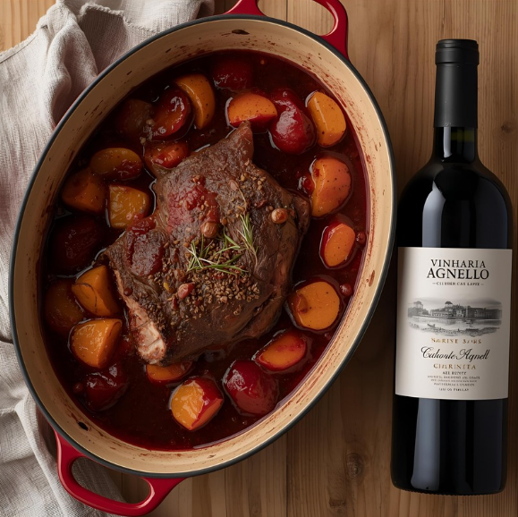
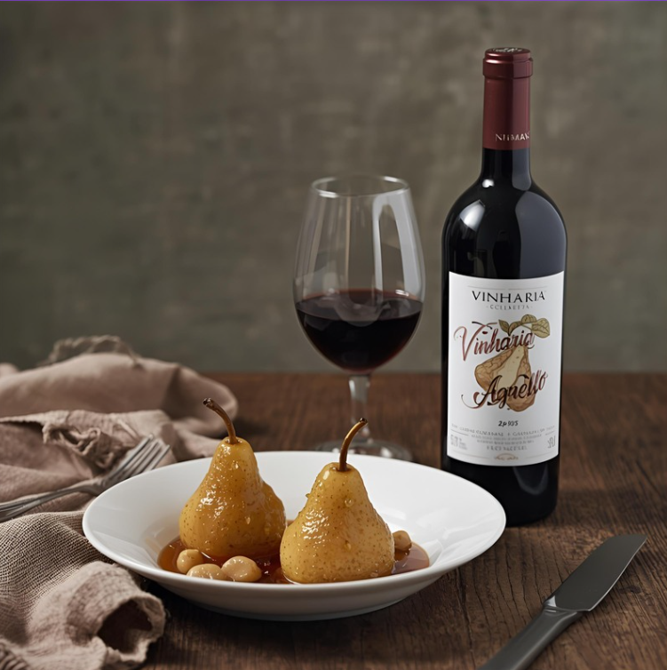
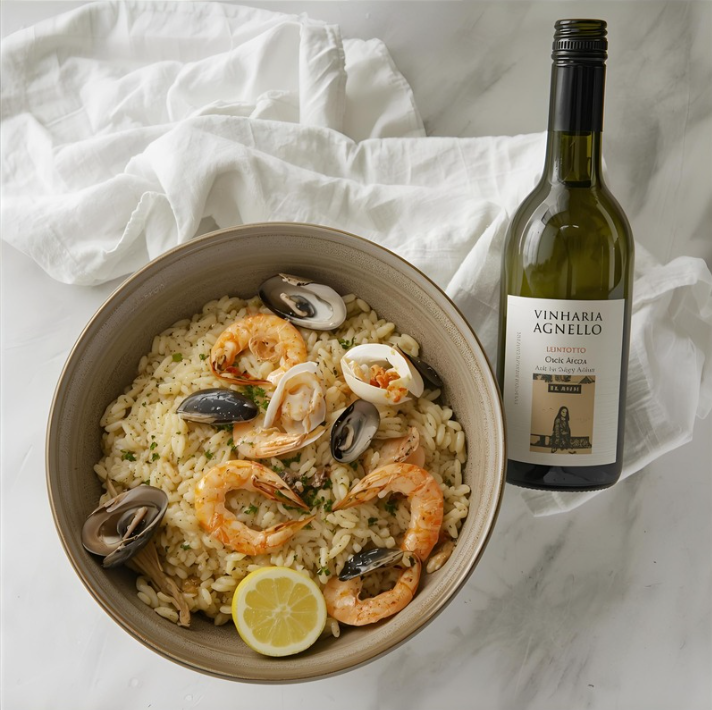

Receitas com os vinhos Agnello

1. Carne de panela ao vinho tinto
Ingredientes principais
- 1 kg de carne de sua preferência (coxão, músculo, acém) em cubos
- 1 cebola grande picada
- 3 dentes de alho picados
- 1 cenoura em rodelas
- 1 talo de salsão (se tiver)
- Azeite
- Sal, pimenta-do-reino
- Vinho tinto seco Agnello
- Caldo de carne ou água
Modo de Preparo
- Tempere a carne com sal e pimenta.
- Doure a carne no azeite até selar por fora. Retire e reserve.
- Na mesma panela, refogue cebola, alho, cenoura e salsão.
- Volte a carne, adicione vinho tinto suficiente para cobrir parte da carne, deixe reduzir um pouco.
- Acrescente caldo ou água, tampe e cozinhe em fogo baixo até a carne ficar macia (ou na pressão para acelerar).
- Ajuste temperos e sirva com purê, arroz ou legumes.

2. Sobremesa: peras escalfadas no vinho Agnello
Ingredientes principais
- Peras firmes (descascadas, inteiras ou em metades)
- Vinho tinto Agnello (ou branco, se quiser algo mais delicado)
- Açúcar ou mel
- Canela em pau, cravos, casca de laranja ou limão
Modo de Preparo
- Em uma panela, misture o vinho Agnello, os temperos e o açúcar.
- Leve ao fogo até ferver, adicione as peras.
- Deixe cozinhar em fogo baixo até que as peras estejam macias, mas sem desmanchar.
- Retire as peras, reduza o líquido até virar uma calda.
- Sirva as peras regadas com a calda, pode acompanhar sorvete ou creme.

3. Risoto de vinho branco Agnello com frutos do mar
Ingredientes principais
- Arroz arbóreo
- Vinho branco seco Agnello
- Cebola picada
- Alho
- Caldo de peixe ou de legumes quente
- Frutos do mar (mexilhões, camarões, etc.)
- Manteiga e queijo parmesão (opcional)
- Sal, pimenta
Modo de Preparo
- Refogue cebola e alho em manteiga ou azeite.
- Acrescente o arroz e refogue rapidamente.
- Adicione uma parte do vinho branco, mexendo até quase evaporar.
- Vá adicionando caldo, concha por concha, mexendo sempre
- Quando o arroz estiver quase pronto, junte os frutos do mar para que cozinhem.
- Finalize com manteiga e queijo, ajuste sal/pimenta.